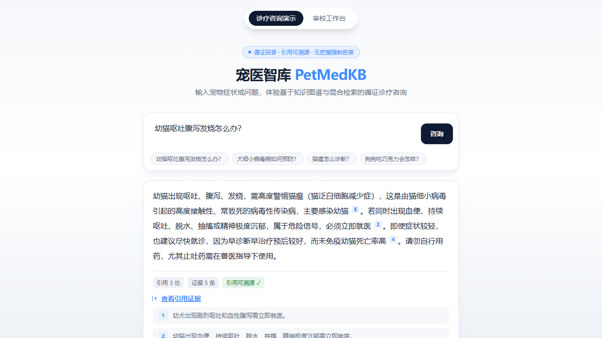

KNOWLEDGE PRODUCT / PETMEDKB先看疾病关系，
先看疾病关系，
再查回答依据。
PetMedKB 把宠物医疗知识做成两种体验：疾病星空图呈现疾病与症状的联系，检索问答展示回答和引用来源。
项目重点让知识关系看得见，让答案依据查得到。
01 / DISEASE CONSTELLATION
疾病星空图
把疾病、症状和危险信号放进同一张关系图。点选节点后查看相关疾病与资料线索，帮助用户顺着关联继续查找。
星图视图 / 疾病与症状关联
02 / RETRIEVAL WITH CITATIONS
引用式检索问答
输入宠物症状后查看 AI 回答、引用编号和相关证据。来源与回答同时呈现，便于进一步核对；此页截图是功能演示，不构成医疗建议。

问答演示 / 回答附引用来源知识流程
资料来源→结构化条目→机器预检→人工审校→检索问答→引用与拒答
设计重点
- 星图负责发现疾病与症状间的联系。
- 检索回答展示可追溯引用，方便核对资料。
- 证据不足时保留回答边界，不把演示包装成诊断结论。
项目边界
这是宠物医疗知识治理与问答演示，不用于诊断或治疗决策。页面所用两张图为本地项目的实际界面截图；裁切掉与功能展示无关的侧栏数量信息。